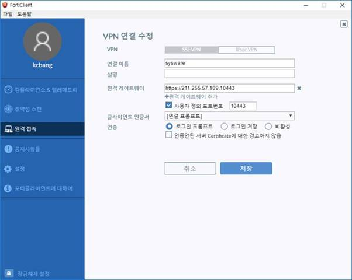

사내 vpn 접속
사내 VPN이 다시 구성 되어 접속 방법 알려드립니다.
-
첨부해 드리는 클라이언트 설치
-
그림과 같이 연결 정보를 추가합니다.

원격게이트워이 https://211.255.57.109
포트번호 10443
- 아이디 및 암호
1 : sysware01 / sysware01 ~ sysware10 / sysware10
추후 소스세이프도 외부 오픈 안할예정입니다. 소스세이프 사용시 VPN접속후 사용하세요.
소스세이프는 아직 복구중입니다.
수고하세요